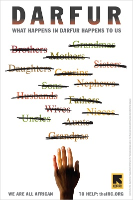

52-Kararlılık: Her Şey Değişecek
Afrika’ya dair her öyküde, dayanak noktası aldatma olan bir unsur vardır. Amerikan İmparatorluğu’nun uyguladığı politikalarda hile, manevra ve inkâr Mısır’dan Mali’ye, hatta Diego Garcia’ya kadar her yerde anahtar konumundaki kavramlardır. Bizim imparatorluğumuz da tarihteki herhangi bir imparatorluk kadar acımasız ve insafsızdır. Daha fazla sayıda insanı köleleştirmiştir. Politikaları ve eylemleri Roma, İspanya, Portekiz, Fransa, İngiltere ve Hollanda imparatorluklarının ya da Stalin ve Hitler’in neden olduğundan daha fazla can kaybına yol açmıştır. Ve şık söylemlerin arkasına saklanan suçları neredeyse hiç algılanmamıştır. Eğitim sistemimiz ve medya bu yalanlar komplosunun içinde etkin olarak yer alır. Asya bize IMF ve Dünya Bankası’nın politikalarının ne denli tehlikeli olduğunu öğretmiştir. Latin Amerika demokrasiye uzanan yolu aydınlatır. Ortadoğu yeni- sömürgeciliğin, bir yanıyla ve bir ölçüde başarısızlığa uğradığını afişe eder; Afrika ise belki de alınabilecek en önemli dersleri sunar. Afrika’nın ortasında durup yüzümüzü batıya, Amerika’ya doğru döndüğümüzde ellerini ağzının etrafında (Nijer Deltası’nın Gine Körfezi ile birleştiği yerde) megafon gibi birleştirmiş bağıran bir kıta görürüz: Uyanın! Bilgilenin ve gayret edin.
Afrika bu kitabın büyük bölümünü oluşturan ‘bir imparatorluk yaratma ve kendimizi o imparatorluğu her yöne doğru genişletme planına adamanın tarihini’ anlatma açısından çok uygun bir konu başlığıdır. Afrika acil durum sinyallerini her yerden daha güçlü vermektedir.
Zehirli gazları önceden algılaması için kafesinde maden ocağına indirilmiş ölü kanaryadır o. Maden ocağı bir ölüm tuzağıdır onun için.
Kendimizi kurtarmalı, çocuklarımızın yaşanabilir ve istikrarlı bir dünyaya doğru yürüyeceği yolun yapıtaşlarını döşemeye başlamalıyız. Bunu yapmak içinde Afrika’nın sesine kulak vermemiz gerekir. Kulaklarımızı Atlantik Okyanusu’nun öte yakasından gelen sese açık tutmamız şarttır. Şöyle der bize: Küçük bir gezegen üstünde, küçük bir toplum halinde yaşıyorsunuz. Çocuklarınızın selameti için, benim çocuklarımı kurtarmama için yardım etmelisiniz; onlar sizin de çocuklarınız; biz bir aileyiz.
Afrika bize, Indianalı çiftçileri zenginleştirirken Malililer’i yoksullaştırmanın artık işe yaramadığını anlatır. Bu zamanlar Indianalılar’ın işine yaramış olabilir ama artık öyle değil. Aynı şey yaşamımızı rahatlatır gibi görünen başka birçok unsur için de söylenebilir. ‘Ulusal çıkar’ günleri geride kaldı. Gelecek nesillerin başarısı ‘küresel çıkarlarda’, tüm insan topluluğu, hatta yaşayan tüm organizmaların oluşturduğu topluluğun yararı için olan planlardadır. Tek bir halkız ve aynı gezegen üstünde yaşıyoruz. Bu ailede ‘Uganda Kasabı’ İdi Amin’e, Angolalı Savimbi’ye, Kongolu Mobutu ve Kabila’ya, Nijeryalı Abacha ve Obasanjo’ya ya da Liberyalı Doe’ye, Hitler’e olduğundan fazla yer yok. Virginia’daki büyük çiftliklerde kölelere ne kadar yer varsa, Sudan’da da o kadar olmalı. Bu mesaj yavaş yavaş dünyaya ulaşıyor. Aşağıdaki afiş, 2006 yılı sonbaharında New York metrosunun her tarafında görüldü:

Milton Glaser, Darfur: Darfur’da Ne Oluyorsa Hepimize Oluyor, 2006.
Afiş yazısı: Bugün 500 aile öldürüldü ve bu her gün devam ediyor. Hepimiz Afrikalıyız.
Afrika bütün konuları bünyesinde bir araya toplar. Bir anlamda pervasızca girişilmiş sömürünün son cephesini teşkil eder. Bu bizlerin kendimizi aldatma sarhoşluğuna düşecek kadar uyuşturulmaya izin verdiğimiz için olmuştur. Ucuz altın ve elmas işportacılığı yapan televizyon reklamlarına kapılıp gidiyoruz. Dizüstü bilgisayarlarımızın ve cep telefonlarımızın fiyatlarının düşmesiyle böbürleniyoruz. Akaryakıt tüketiyor, bir yandan da fiyatların yüksek olduğundan yakınıyoruz. Elmas ve altın madenlerinde çalışan işçilerin ve petrol serpintileri altında zehirlenen çocukların yüzlerini, maddeci tamahkârlığın beraberinde getirip önümüze serdiği pislikleri kilimin altına süpürüyor, evimizi o kirden arındırmış gibi davranıyoruz.
İstenmedik şeyleri altına süpürdüğümüz o kilimi çocuklarımıza miras bırakacağımızı unutuyoruz. Günün birinde geride bıraktığımız korkunç pisliği temizlemek onlara kalacak.
Afrika sesini duyurmak için ellerini ağzının iki yanına koymuş bize bağırıyor. Değişim zamanı sahiden geldi. Şükretmeliyiz ki, yarattığımız dünyayı değiştirmek için gerekli her şeye sahibiz. O kilimi birlikte kaldırabilir, pisliği toparlayabilir ve çocuklarımıza devretmek üzere olduğumuz evi gerçek anlamda temizleyebiliriz.